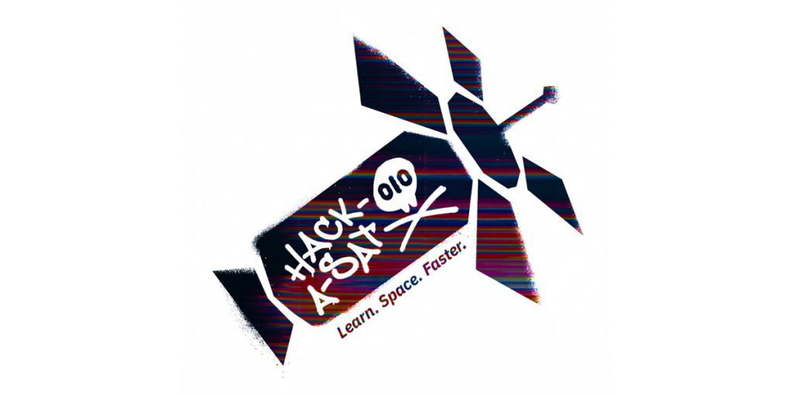

This is my homepage, here I've got a few interesting links to some cool engineering and science things, primarily talking about space and cubesats. After I have a Resume section and some cool things I've learned from my classes I've experienced so far.
A cubesat is a standardized system for making miniature satellites, popular for use in things like research or university projects, they are generally very cheap by comparison to more specifically designed satellites. Here I have provided a few links to places to learn more, NASA and Hack-A-Sat's pages talking about the subject. Hack-A-Sat is particularlly cool since its a 'hackathon in space' where a cubesat was launched up and people competed in hacking it in a game of hacker capture the flag.
NASA: What are Cubesats | Topic | Description | Class I Learned it From |
|---|---|---|
| FFT | Fast Fourier Transform Algorithm that breaks down signal from time domain into frequency domain Is a more efficient version DFT or Discrete Fourier Transform |
ECE 3210 |
| Laplace Transform | Similar to the Fourier Transform, algorithm that converts a signal
from time domain into frequency domain Uses S instead of j omega |
ECE 3210, ECE 2240 |
| VHDL | Hardware description language, similar to a programming language,
used for designing an FPGA Common alternative is Verilog |
ECE 3610 |
| Assembly Language | A low level language type between languages like C and machine code
Either RISC or CISC style common ones are MIPS, X86, ARM, RISC-V |
ECE 3710, ECE 3610, CS 2810 |